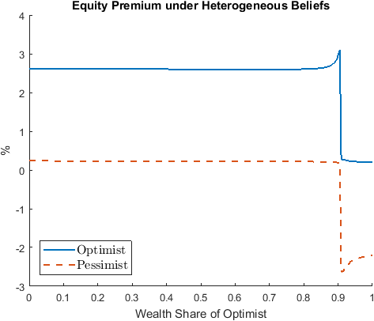

Cao (2018): Speculation and Wealth Distribution under Beliefs Heterogeneity¶
The models that we have seen so far are models with rational expectations. Our toolbox can be used to solve models without rational expectations. A recent example is Cao (2018).
The Model¶
The model in Cao (2018) is similar to the one in Heaton and Lucas (1996) with several main differences. First and foremost, the two representative agents might differ in their beliefs on the transition matrix for the exogenous Markov process. Therefore, it departs from the rational expectations assumption. Cao (2018) uses agent index \(i\in \{\text{O},\text{P}\}\), which stands for optimists or pessimists. Second, the agents are subject to a collateral constraints, besides the short-selling constraint:
where \(m\in(0,1)\) denotes the margin requirement when agents purchase stock with leverage.
We use the toolbox to solve the version of the model in Example 4 in Cao (2018) with \(m=0.1\). The constraints imply that wealth shares always lie between \(0\) and \(1\).
The gmod file¶
The model is solved with Cao2018_HL.gmod
1 2 3 4 5 6 7 8 9 10 11 12 13 14 15 16 17 18 19 20 21 22 23 24 25 26 27 28 29 30 31 32 33 34 35 36 37 38 39 40 41 42 43 44 45 46 47 48 49 50 51 52 53 54 55 56 57 58 59 60 61 62 63 64 65 66 67 68 69 70 71 72 73 74 75 76 77 78 79 80 81 82 83 84 85 86 87 88 89 90 91 92 93 94 95 96 97 98 99 100 101 102 103 104 105 106 107 108 109 110 111 112 113 114 115 116 117 118 119 120 121 122 123 124 125 126 127 128 129 130 | % Toolbox options
SIMU_RESOLVE=0;SIMU_INTERP=1;
% Parameters
parameters beta1 beta2 sigma1 sigma2 shock_trans1 shock_trans2 Tg TP TO ql qh pl ph m eO;
beta1 = 0.95;
beta2 = 0.95;
sigma1 = 1.5;
sigma2 = 1.5;
m = 0.1;
var_shock d e1 e2 g;
shock_num = 4;
d = [0.20 0.20 0.15 0.15];
g = [0.9904 1.0470 0.9904 1.0470];
eO = 0.5;
e1 = eO*ones(1,4); %[0.5 0.5 0.5 0.5];
e2 = (1-eO)*ones(1,4); %[0.5 0.5 0.5 0.5];
% bounds for asset price
ql = 1e-10*min(d)*min(beta1/(1-beta1),beta2/(1-beta2));
qh = max(d)*max(beta1/(1-beta1),beta2/(1-beta2));
pl = 1e-10*min(beta1,beta2);
ph = 10*max(beta1,beta2);
% States
var_state W;
WPts = 1000;
WMin=0;
WMax=1;
W=linspace(WMin,WMax,WPts);
Tg =[0.5885 0.4115;0.4115 0.5885];
TP = [0.5 0.5;0.5 0.5];
TO = [0.8 0.2;0.8 0.2];
shock_trans = kron(TP,Tg);
shock_trans1 = kron(TO,Tg);
shock_trans2 = shock_trans;
% Tensor variables
var_tensor budget1 budget2 etotal;
budget1 = e1+d.*W;
budget2 = e2+d.*(1-W);
etotal = e1+e2+d; %etotal = 1
% Endogenous variables, bounds, and initial values
var_policy p q c1 c2 lambda1 lambda2 mu1 mu2 kp1 a1 a2 Wp[4];
inbound p pl ph adaptive(2);
inbound q ql qh adaptive(2);
inbound c1 1e-10 etotal;
inbound c2 1e-10 etotal;
inbound kp1 0 1;
inbound lambda1 0 1;
inbound lambda2 0 1;
inbound mu1 0 1;
inbound mu2 0 1;
inbound a1 0 1;
inbound a2 0 1;
inbound Wp 0.0 1.0;
var_aux bp1 bp2 Rq[4] equity_premium_1 equity_premium_2;
var_output q p Wp;
var_interp c1Future c2Future qFuture;
c1Future = c1;
c2Future = c2;
qFuture = q;
initial c1Future budget1;
initial c2Future budget2;
initial qFuture 0;
model;
qp' = qFuture'(Wp')+d';
qCC = GDSGE_MIN{qp'*g'};
c1p' = c1Future'(Wp');
c2p' = c2Future'(Wp');
% Transform of variable
bp1 = m*qCC*a1 - m*qCC*kp1;
bp2 = m*qCC*a2 - m*qCC*(1-kp1);
% Equations in text
eq1 = -1 + lambda1 + mu1*m*qCC*p/q+ beta1*GDSGE_EXPECT{qp'*((g')^(1-sigma1))*((c1p')^(-sigma1))| shock_trans1}/(q*(c1^(-sigma1)));
eq2 = -1 + mu1 + beta1*GDSGE_EXPECT{((g')^(-sigma1))*((c1p')^(-sigma1))| shock_trans1}/(p*(c1^(-sigma1)));
eq3 = lambda1*kp1;
eq4 = mu1*a1;
eq5 = -1 + lambda2 + mu2*m*qCC*p/q+beta2*GDSGE_EXPECT{qp'*((g')^(1-sigma2))*((c2p')^(-sigma2))| shock_trans2}/(q*(c2^(-sigma2)));
eq6 = -1 + mu2 + beta2*GDSGE_EXPECT{((g')^(-sigma2))*((c2p')^(-sigma2))| shock_trans2}/(p*(c2^(-sigma2)));
eq7 = lambda2*(1-kp1);
eq8 = mu2*a2;
% market clear
mc = 1-a1-a2;
equity_premium_1 = GDSGE_EXPECT{(qp')/q*g' | shock_trans1} - 1/p;
equity_premium_2 = GDSGE_EXPECT{(qp')/q*g' | shock_trans2} - 1/p;
% Consistency
consis' = (qp'*kp1+bp1/g') / qp' - Wp';
Rq' = qp'*g'/q;
equations;
1 - ((q+d)*W + e1 - q*kp1 - p*bp1)/c1;
1 - ((q+d)*(1-W) + e2 - q*(1-kp1) - p*bp2)/c2;
eq1;
eq2;
eq3;
eq4;
eq5;
eq6;
eq7;
eq8;
mc;
consis';
end;
end;
simulate;
num_samples = 100;
num_periods = 10000;
initial W 0.5
initial shock 1;
var_simu q p;
W'= Wp';
end;
|
This should look familiar if you already came from the Heaton and Lucas (1996) example. The new element of the model, heterogeneous belief, is incorporated in the following two lines
89 | eq2 = -1 + mu1 + beta1*GDSGE_EXPECT{((g')^(-sigma1))*((c1p')^(-sigma1))| shock_trans1}/(p*(c1^(-sigma1)));
|
93 | eq6 = -1 + mu2 + beta2*GDSGE_EXPECT{((g')^(-sigma2))*((c2p')^(-sigma2))| shock_trans2}/(p*(c2^(-sigma2)));
|
As shown, the GDSGE_EXPECT function takes an optional argument following operator | to explicitly specify the transition matrix (with default specified in shock_trans). In the current example, the transition matrix used by the optimists and pessimists are defined in shock_trans1 and shock_trans2, respectively. Notice shock_trans1 and shock_trans2 need to be explicitly declared as parameters to be used in the model block.
Results¶
The following figure shows the equity premium as perceived by the optimists and the pessimists. The optimists believe that the likelihood of high dividend payment is higher than the pessimists do. Therefore, the optimists’ perceived equity premium is always higher, and they borrow from the pessimists to invest in stock.
{kind=link}
In the ergodic distribution of wealth share in following figure using the pessimists’ beliefs as the correct beliefs, the optimists own large fractions of total wealth despite the fact that their beliefs are incorrect.